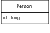

| Home | Articles | Talks | Links | Contact Me | ISA | ThoughtWorks |
Save a database id field in an object to maintain identity between an in-memory object and a database row.

Relational databases tell one row from another by using keys, in particular the primary key. However in-memory objects don't need such a key, as the object system ensures the correct identity under the covers (or in C++'s case with raw memory locations). Reading data from a database is all very well, but in order to write data back, you need to tie the in-memory object system to the database.
In essence Identity Field is mind-numbingly simple. All you do is store the primary key of the relational database table in fields of the object.
Although the basic notion of Identity Field is very simple, there are oodles of complicated issues that come up.
The first issue is what kind of key to choose in your database? Often, of course, this isn't a choice since you are often dealing with an existing database that already has its key structures in place. There's also a lot of discussion and material on this in the database community. But mapping to objects does add some concerns in the choice.
The first question is whether to use meaningful or meaningless keys. A meaningful key is something like the US social security number to identify a person. A meaningless key is essentially a random number that the database dreams up that's never intended for human use. The danger with a meaningful key is that while in theory they make good keys, in practice they don't. To work at all keys need to be unique. To work well keys need to be immutable. While assigned numbers are often supposed to be unique and immutable, human error often makes them neither. If you mistype my SSN for my wife the resulting record is neither unique nor immutable (assuming you'd like to fix the mistake.) While the database should detect the uniqueness problem it can only do that after my SSN goes into the system, and of course there's a 50% chance that that won't happen. As a result meaningful keys should be distrusted. For small systems and/or very stable cases you may get away with it, but usually you should take a rare stand on the side of meaninglessness.
The next issue is between simple and compound keys. A simple key is only one database field, a compound key uses more than one field. The advantage of a compound key is that it's often easier to use when one table makes sense in the context of another. A good example is orders and line items. A compound key of the order number and a sequence number makes a good key for a line item. While compound keys often make sense, there is a lot to be said for the sheer uniformity of simple keys. If you use simple keys everywhere you can use the same code for all key manipulation. Compound keys require special handling in concrete classes. (With code generation this isn't a problem). Compound keys also carry a bit of meaning, so be careful about the uniqueness and particularly the immutability rule with them.
You have to choose the type of the key. The most common operation you'll do with a key is checking equality. So you want a type with a fast equality operation. The other important operation is getting the next key. As a result a long integer type is often the best bet for keys. Strings can also work, but equality checking may be slower and incrementing them is a bit more painful. Your DBA's preferences may well decide the issue.
(Beware about using dates or times in keys. Not just are they meaningful, they also lead to problems with portability and consistency. Dates in particular are vulnerable to this as they are often stored to some fractional second precision, which can easily get out of sync and lead to identity problems.)
You can have keys that are unique to the table, or database wide unique keys. A table-unique key ensures that key is unique across the table, which is what you need for a key in any case. A database-unique key is a key that is unique across every row in every table in the database. A table-unique key is usually fine, but a database-unique key is often easier to do, and allows you to use a single Identity Map. Modern values being what they are, it's pretty unlikely you'll run out of numbers for new keys. If you really insist you can reclaim keys from deleted objects with a simple database script that compacts the key space - although running this script will require you to take the application offline. But if you use 64 bit keys (and you might as well) you're unlikely to need it.
If you use table-unique keys, be wary of inheritance. If you are using Concrete Table Inheritance or Class Table Inheritance life is much easier if you use keys that are unique to the hierarchy rather than unique to each table. I still use the term table-unique, even if it should strictly be something like "inheritance graph unique".
The size of your key may effect performance, particularly with indexes. This is very dependent on both your database system and how many rows you have, but it's worth doing a crude check before you get fixed into your decision.
The simplest form of Identity Field is a simple field which matches the type of the key in the database. So if you use a simple integral key, an integral field will work very nicely.
Compound keys are more problematic. If you have compound keys the best bet is to make a key class. A generic key class can store a sequence of objects that act as the elements of the key. The key behavior (I have a quota of puns per book to fill) is equality. It's also useful to get parts of the key when you are doing the mapping to the database.
A key object is then easy to use with the association mappings and with Identity Map. As such you might decide to avoid a key object when you are using a Transaction Script and Row Data Gateway architecture.
If you use the same basic structure for all keys, you can do all of the key handling in a Layer Supertype. This works particularly well if you can use an integral key field for all database tables. If you start getting any compound keys you should use a key object in the Layer Supertype instead. Again you can put default behavior which will work for most cases in the Layer Supertype and extend it for the exceptional cases in the particular subtypes.
You can either have a single key class, which takes a generic list of key objects, or you can have a key class for each domain class with explicit fields for each part of the key. I usually prefer to be explicit, but in this case I'm not sure it buys very much. You end up with lots of small classes that don't do anything interesting. The main benefit is that you can avoid errors due to people putting the elements of the key in the wrong order, but that doesn't seem to be a big problem in practice.
If you are likely to import data between different database instances, then you need to remember that you'll get key collisions unless you come up with some scheme to separate the keys between different databases. You can solve this with some kind of key migration on the imports, but this can easily get very messy.
To create an object, you'll need to get a key. This sounds like a simple matter, but in practice it's often quite a problem. You have three basic choices: get the database to auto-generate, use a GUID, or generate your own.
The auto generate route should be the easiest. Each time you insert data for the database the database takes care of generating a unique primary key.You don't have to do anything - it sounds too good to be true and sadly it often is. Not all databases do this the same way, and many of those that do handle it in such a way that causes problems for object-relational mapping.
The most common auto-generation method is that of declaring one field to be an auto-generated field. In this case whenever you insert a row, this field is incremented to a new value. The problem with this scheme is that you can't easily determine what value got generated as the key. If you want to insert an order and several line items you need the key of the new order so you can put the value in the foreign key for the line items. You also need this before the transaction commits so you can save everything within the transaction. Sadly databases usually don't give you this information, so you usually can't use this kind of auto generation on any table where you need to insert connected objects.
An alternative approach to auto-generation is a database counter, Oracle does this with its sequence. An Oracle sequence works by sending a select statement that references a sequence, the database then returns a SQL record set consisting of the next value in the sequence. You can set a sequence to increment by any integer, which allows you get multiple keys at once. The sequence query is automatically carried out in a separate transaction, so that a accessing the sequence won't lock out other transactions inserting at the same time. A database counter like this is perfect for our needs, but it's non-standard and not available in all databases.
A GUID (Globally Unique IDentifier) is a number generated on one machine that is guaranteed to be unique across all machines in space and time. Often platforms give you the API to generate one. The algorithm is an interesting one involving ethernet card addresses, time of the day in nanoseconds, chip id numbers, and probably the number of hairs on your left wrist. All that matters is that the resulting number is completely unique and thus a safe key. The only disadvantage is that the resulting key string is big, and that can be an equally big problem. There's always times when someone needs to type in a key to window or SQL expression, and long keys are hard both to type and to read. Large keys may also lead to performance problems, particularly with indexes.
The last option is rolling your own. A simple staple for small systems is to use a table scan using the SQL max function to find the largest key in the table, then add one to use it. Sadly this read locks the entire table while you are doing it. As a result it works fine if inserts are rare, but if you have inserts running concurrently with updates on the same table your performance will be toasted. You also have to ensure you have complete isolation between transactions otherwise you can end up with multiple transactions getting the same id value.
A better approach is to use a separate key table. This table is typically a table with two columns: a name and next available value. If you use database-unique keys, then you'll have just one row in this table. If you use table-unique keys then you'll have one row for each table in the database. To use the key table, all you need to do is read that one row note the number, increment it and write it back to the row. You can grab many keys at a time by adding a suitable number when you update the key table. This cuts down on expensive database calls as well as reducing contention on the key table.
If you use a key table, it's a good idea to design it so the access to the key table is done in a separate transaction to the one that updates the table you are inserting into. Say I'm inserting an order into the orders table. To do this I'll need to lock the orders row on the key table with a write lock (since I'm updating). That lock will last for the entire transaction that I'm in, locking out anyone else who wants a key. For table-unique keys, this means anyone inserting into the orders table. For database-unique keys this means anyone inserting anywhere.
By putting the access to the key table in a separate transaction, you only lock the row for that, much shorter, transaction. The downside is that if you rollback on your insert to the orders, then the key you got from the key table access is lost to everyone. Fortunately numbers are cheap, so that's not a big issue. Using a separate transaction also allows you to get the id as soon as you create the in-memory object, which is often some before you open the transaction to commit the business transaction.
Using a key table affects the choice on whether to use database-unique or table-unique keys. If you use a table-unique key, you have to add a row to the key table every time you add a table to the database. This is more effort, but it reduces contention on the row. If you keep your key table accesses in a different transaction, then contention is not so much of a problem, especially if you get multiple keys in a single call. But if you can't for the key table update to be in a separate transaction, that's a strong reason against using database-unique keys.
It's good to separate the code for getting a new key into it's own class, as that makes it easier to build a Service Stub for testing purposes.
You need to use Identity Field when there is a mapping between objects in memory and rows in a database. The usual cases for this is where you are using Domain Model or a Row Data Gateway. Conversely you don't need this if you are using Transaction Script, Table Module, or a Table Data Gateway
A small object with value semantics, such as a money or date range object, will not have its own table. It's better to use Embedded Value. For a complex graph of objects that doesn't need to be queried within the relational database Serialized LOB is usually easier to write and gives faster performance.
One alternative to Identity Field is to use an Identity Map to maintain the correspondence. This can be used for systems where you don't want to store an Identity Field in the in-memory object. The Identity Map needs to look up both ways: give me a key for an object or an object for a key. I don't see this done so often because usually it's easier to store the key in the object.
The simplest form of Identity Field is a integral field in the database that maps to an integral field in an in-memory object.
class DomainObject...
public const long PLACEHOLDER_ID = -1;
public long Id = PLACEHOLDER_ID;
public Boolean isNew() {return Id == PLACEHOLDER_ID;}
An object that's been created in memory but not saved to the database will not have a value for its key. For a .NET value object, this is a problem since .NET values cannot be null. Hence the placeholder value.
The key is becomes important in two places: finding and insertion. For finding you need to form a query using a key in a where clause. In .NET you may load many rows into a data set and then select a particular one with a find operation.
class CricketerMapper...
public Cricketer Find(long id) {
return (Cricketer) AbstractFind(id);
}
class Mapper...
protected DomainObject AbstractFind(long id) {
DataRow row = FindRow(id);
return (row == null) ? null : Find(row);
}
protected DataRow FindRow(long id) {
String filter = String.Format("id = {0}", id);
DataRow[] results = table.Select(filter);
return (results.Length == 0) ? null : results[0];
}
public DomainObject Find (DataRow row) {
DomainObject result = CreateDomainObject();
Load(result, row);
return result;
}
abstract protected DomainObject CreateDomainObject();
Most of this behavior can live on the Layer Supertype, but you'll often need to define the find on the concrete class just to encapsulate the downcast. Naturally you can avoid this in a language that doesn't use compile-time typing.
With a simple integral Identity Field the insertion behavior can also be held at the Layer Supertype.
class Mapper...
public virtual long Insert (DomainObject arg) {
DataRow row = table.NewRow();
arg.Id = GetNextID();
row["id"] = arg.Id;
Save (arg, row);
table.Rows.Add(row);
return arg.Id;
}
Essentially insertion involves creating the new row and using the next key for that new row. Once you have the new row you can save the in-memory object's data to this new row.
by Matt Foemmel and Martin Fowler
If your database supports a database counter and you're not worried about being dependent on database specific SQL, then you should use the counter. Even if you are worried about being dependent on a database you should still consider it - as long as your key generation code is nicely encapsulated you can always change it to a portable algorithm later. You could even use a strategy to use counters where you have them and roll your own when you don't.
But for the moment lets assume we have to this the hard way. The first thing we need is a key table in the database.
CREATE TABLE keys (name varchar primary key, nextID int)
INSERT INTO keys VALUES ('orders', 1)
The key table contains one row for each counter that's in the database. In this case I've initialized the key to 1. If you are pre-loading data in the database you'll need to set the counter to a suitable number. If you want database-unique keys you'll only need the one row. If you have table-unique keys then you'll have one row per table.
You can wrap all of your key generation code into its own class, that way it's easier to use it more widely around one or more applications. It also makes it easier to put key reservation into its own transaction.
We construct a key generator with its own database connection, together with information on how many keys to take from the database at once.
class KeyGenerator...
private Connection conn;
private String keyName;
private long nextId;
private long maxId;
private int incrementBy;
public KeyGenerator(Connection conn, String keyName, int incrementBy) {
this.conn = conn;
this.keyName = keyName;
this.incrementBy = incrementBy;
nextId = maxId = 0;
try {
conn.setAutoCommit(false);
} catch(SQLException exc) {
throw new ApplicationException("Unable to turn off autocommit", exc);
}
}
We need to ensure that no auto-commit is going on since we absolutely have to have the select and update operating in one transaction.
class KeyGenerator...
public synchronized Long nextKey() {
if (nextId == maxId) {
reserveIds();
}
return new Long(nextId++);
}
When we ask for a new key, the generator first looks to see if it has one cached, rather than going to the database.
If the generator hasn't got one cached, then it needs to go to the database.
class KeyGenerator...
private void reserveIds() {
PreparedStatement stmt = null;
ResultSet rs = null;
long newNextId;
try {
stmt = conn.prepareStatement("SELECT nextID FROM keys WHERE name = ? FOR UPDATE");
stmt.setString(1, keyName);
rs = stmt.executeQuery();
rs.next();
newNextId = rs.getLong(1);
}
catch (SQLException exc) {
throw new ApplicationException("Unable to generate ids", exc);
}
finally {
DB.cleanUp(stmt, rs);
}
long newMaxId = newNextId + incrementBy;
stmt = null;
try {
stmt = conn.prepareStatement("UPDATE keys SET nextID = ? WHERE name = ?");
stmt.setLong(1, newMaxId);
stmt.setString(2, keyName);
stmt.executeUpdate();
conn.commit();
nextId = newNextId;
maxId = newMaxId;
}
catch (SQLException exc) {
throw new ApplicationException("Unable to generate ids", exc);
}
finally {
DB.cleanUp(stmt);
}
}
In this case we use SELECT... FOR UPDATE to tell the database to hold a write lock on the keys table. This is an Oracle specific statement, so your mileage will vary if you're using something else. If you can't write lock on the select you run the risk of the transaction failing should another one get in there before you. In this case, however you can pretty safely just rerun reserveIds until you get a pristine set of keys.
Using a simple integral key is a good simple solution, but often you need to use other types or compound keys.
As soon as you need to use something else it's worth using putting together a key class. A key class needs to be able to store multiple elements of the key and to be able to tell if two keys are equal.
class Key...
private Object[] fields;
public boolean equals(Object obj) {
if (!(obj instanceof Key)) return false;
Key otherKey = (Key) obj;
if (this.fields.length != otherKey.fields.length) return false;
for (int i = 0; i < fields.length; i++)
if (!this.fields[i].equals(otherKey.fields[i])) return false;
return true;
}
The most elemental way to create a key is with an array parameter.
class Key...
public Key(Object[] fields) {
checkKeyNotNull(fields);
this.fields = fields;
}
private void checkKeyNotNull(Object[] fields) {
if (fields == null) throw new IllegalArgumentException("Cannot have a null key");
for (int i = 0; i < fields.length; i++)
if (fields[i] == null)
throw new IllegalArgumentException("Cannot have a null element of key");
}
If you find there are common cases when you create keys with certain elements, you can add convenience constructors. The exact convenience constructors will depend on what kinds of keys your application has.
class Key...
public Key(long arg) {
this.fields = new Object[1];
this.fields[0] = new Long(arg);
}
public Key(Object field) {
if (field == null) throw new IllegalArgumentException("Cannot have a null key");
this.fields = new Object[1];
this.fields[0] = field;
}
public Key(Object arg1, Object arg2) {
this.fields = new Object[2];
this.fields[0] = arg1;
this.fields[1] = arg2;
checkKeyNotNull(fields);
}
Don't be afraid to add these convenience methods, after all convenience is important to everyone using the keys.
Similarly you can add accessor functions to get parts of key. The application will need to do this for the mappings.
class Key...
public Object value(int i) {
return fields[i];
}
public Object value() {
checkSingleKey();
return fields[0];
}
private void checkSingleKey() {
if (fields.length > 1)
throw new IllegalStateException("Cannot take value on composite key");
}
public long longValue() {
checkSingleKey();
return longValue(0);
}
public long longValue(int i) {
if (!(fields[i] instanceof Long))
throw new IllegalStateException("Cannot take longValue on non long key");
return ((Long) fields[i]).longValue();
}
In this example we'll map to an order and line item tables. The order table has a simple integral primary key, the line item primary key is a compound of the order's primary key and a sequence number.
CREATE TABLE orders (ID int primary key, customer varchar) CREATE TABLE line_items (orderID int, seq int, amount int, product varchar, primary key (orderID, seq))
The Layer Supertype for domain objects needs to take have a key field.
class DomainObjectWithKey...
private Key key;
protected DomainObjectWithKey(Key ID) {
this.key = ID;
}
protected DomainObjectWithKey() {
}
public Key getKey() {
return key;
}
public void setKey(Key key) {
this.key = key;
}
As with other examples in this book I've split the behavior into find (which gets to the right row in the database) and load (which loads data from that row into the domain object). Both responsibilities are affected by the use of a key object.
The primary difference between them and the other examples in this book (which use simple integral keys) is that we have to factor out certain pieces of behavior that are overridden by those classes that have more complex keys. For this example I'm assuming that most tables use simple integral keys but some use something else. So as a result I've made the default case the simple integral and embedded the behavior for that in the mapper Layer Supertype. The order class is one of those simple cases. Here's the code for the find behavior.
class OrderMapper...
public Order find(Key key) {
return (Order) abstractFind(key);
}
public Order find(Long id) {
return find(new Key(id));
}
protected String findStatementString() {
return "SELECT id, customer from orders WHERE id = ?";
}
class AbstractMapper...
abstract protected String findStatementString();
protected Map loadedMap = new HashMap();
public DomainObjectWithKey abstractFind(Key key) {
DomainObjectWithKey result = (DomainObjectWithKey) loadedMap.get(key);
if (result != null) return result;
ResultSet rs = null;
PreparedStatement findStatement = null;
try {
findStatement = DB.prepare(findStatementString());
loadFindStatement(key, findStatement);
rs = findStatement.executeQuery();
rs.next();
if (rs.isAfterLast()) return null;
result = load(rs);
return result;
} catch (SQLException e) {
throw new ApplicationException(e);
} finally {
DB.cleanUp(findStatement, rs);
}
}
// hook method for keys that aren't simple integral
protected void loadFindStatement(Key key, PreparedStatement finder) throws SQLException {
finder.setLong(1, key.longValue());
}
For the find behavior I've extracted out the building of the find statement, since that will require different parameters to be passed into the prepared statement. The line item is a compound key, so needs to override that method.
class LineItemMapper...
public LineItem find(long orderID, long seq) {
Key key = new Key(new Long(orderID), new Long(seq));
return (LineItem) abstractFind(key);
}
public LineItem find(Key key) {
return (LineItem) abstractFind(key);
}
protected String findStatementString() {
return
"SELECT orderID, seq, amount, product " +
" FROM line_items " +
" WHERE (orderID = ?) AND (seq = ?)";
}
// hook methods overriden for the composite key
protected void loadFindStatement(Key key, PreparedStatement finder) throws SQLException {
finder.setLong(1, orderID(key));
finder.setLong(2, sequenceNumber(key));
}
//helpers to extract appropriate values from line item's key
private static long orderID(Key key) {
return key.longValue(0);
}
private static long sequenceNumber(Key key) {
return key.longValue(1);
}
As well as defining the interface for the find methods and providing a SQL string for the find statement, the subclass needs to override the hook method to allow two parameters to go into the SQL statement. I've also written two helper methods to extract the parts of the key information. This makes for clearer code than just putting explicit accessors with numeric indices from the key. Such literal indices are a bad smell.
The load behavior shows a similar structure, default behavior in the Layer Supertype for simple integral keys, overridden for the more complex cases. In this case the order's load behavior looks like this.
class AbstractMapper...
protected DomainObjectWithKey load(ResultSet rs) throws SQLException {
Key key = createKey(rs);
if (loadedMap.containsKey(key)) return (DomainObjectWithKey) loadedMap.get(key);
DomainObjectWithKey result = doLoad(key, rs);
loadedMap.put(key, result);
return result;
}
abstract protected DomainObjectWithKey doLoad(Key id, ResultSet rs) throws SQLException;
// hook method for keys that aren't simple integral
protected Key createKey(ResultSet rs) throws SQLException {
return new Key(rs.getLong(1));
}
class OrderMapper...
protected DomainObjectWithKey doLoad(Key key, ResultSet rs) throws SQLException {
String customer = rs.getString("customer");
Order result = new Order(key, customer);
MapperRegistry.lineItem().loadAllLineItemsFor(result);
return result;
}
The line item needs to override the hook to create a key based on two fields.
class LineItemMapper...
protected DomainObjectWithKey doLoad(Key key, ResultSet rs) throws SQLException {
Order theOrder = MapperRegistry.order().find(orderID(key));
return doLoad(key, rs, theOrder);
}
protected DomainObjectWithKey doLoad(Key key, ResultSet rs, Order order)
throws SQLException
{
LineItem result;
int amount = rs.getInt("amount");
String product = rs.getString("product");
result = new LineItem(key, amount, product);
order.addLineItem(result); //links to the order
return result;
}
//overrides the default case
protected Key createKey(ResultSet rs) throws SQLException {
Key key = new Key(new Long(rs.getLong("orderID")), new Long(rs.getLong("seq")));
return key;
}
The line item also has a separate load method for use when loading all the lines for the order.
class LineItemMapper...
public void loadAllLineItemsFor(Order arg) {
PreparedStatement stmt = null;
ResultSet rs = null;
try {
stmt = DB.prepare(findForOrderString);
stmt.setLong(1, arg.getKey().longValue());
rs = stmt.executeQuery();
while (rs.next())
load(rs, arg);
} catch (SQLException e) {
throw new ApplicationException(e);
} finally { DB.cleanUp(stmt, rs);
}
}
private final static String findForOrderString =
"SELECT orderID, seq, amount, product " +
"FROM line_items " +
"WHERE orderID = ?";
protected DomainObjectWithKey load(ResultSet rs, Order order) throws SQLException {
Key key = createKey(rs);
if (loadedMap.containsKey(key)) return (DomainObjectWithKey) loadedMap.get(key);
DomainObjectWithKey result = doLoad(key, rs, order);
loadedMap.put(key, result);
return result;
}
You need the special handling because the order object isn't put into the order's Identity Map until after it's been created. Creating an empty object and inserting it directly into the Identity Field would avoid the need for this, see [here]
In a similar way to reading data the insertion behavior has a default action for a simple integral key and the hooks to override this for more interesting keys.
In the mapper supertype I provide an operation to act as the interface together with a template method to do the work of the insertion.
class AbstractMapper...
public Key insert(DomainObjectWithKey subject) {
try {
return performInsert(subject, findNextDatabaseKeyObject());
} catch (SQLException e) {
throw new ApplicationException(e);
}
}
protected Key performInsert(DomainObjectWithKey subject, Key key) throws SQLException {
subject.setKey(key);
PreparedStatement stmt = DB.prepare(insertStatementString());
insertKey(subject, stmt);
insertData(subject, stmt);
stmt.execute();
loadedMap.put(subject.getKey(), subject);
return subject.getKey();
}
abstract protected String insertStatementString();
class OrderMapper...
protected String insertStatementString() {
return "INSERT INTO orders VALUES(?,?)";
}
The data from the object goes into the insert statement through two methods separating the data from the key from the basic data of the object. I do this because I can provide a default implementation for the key, which will work for any class, like order, that uses the default simple integral key.
class AbstractMapper...
protected void insertKey(DomainObjectWithKey subject, PreparedStatement stmt)
throws SQLException
{
stmt.setLong(1, subject.getKey().longValue());
}
The rest of the data for the insert statement is dependent on the particular subclass, so this behavior is abstract on the superclass
class AbstractMapper... abstract protected void insertData(DomainObjectWithKey subject, PreparedStatement stmt) throws SQLException;
class OrderMapper...
protected void insertData(DomainObjectWithKey abstractSubject, PreparedStatement stmt) {
try {
Order subject = (Order) abstractSubject;
stmt.setString(2, subject.getCustomer());
} catch (SQLException e) {
throw new ApplicationException(e);
}
}
The line item overrides both of these methods. Line item pulls two values out for key.
class LineItemMapper...
protected String insertStatementString() {
return "INSERT INTO line_items VALUES (?, ?, ?, ?)";
}
protected void insertKey(DomainObjectWithKey subject, PreparedStatement stmt)
throws SQLException
{
stmt.setLong(1, orderID(subject.getKey()));
stmt.setLong(2, sequenceNumber(subject.getKey()));
}
And provides its own implementation of the save statement for the rest of the data
class LineItemMapper...
protected void insertData(DomainObjectWithKey subject, PreparedStatement stmt)
throws SQLException
{
LineItem item = (LineItem) subject;
stmt.setInt(3, item.getAmount());
stmt.setString(4, item.getProduct());
}
Separating out the loading of the data into the insert statement like this is only worthwhile if most classes use the same single field for the key. If there is more variation for handling the key, then having just one command to insert the information is probably easier.
Coming up with the next database key is also something that I can separate into a default and an overridden case. For the default case I can use the key table scheme that I talked about earlier on.For the line item, we run into a problem. The line item's key uses the key of the order for the line item as part of its composite key. However there is no reference from the line item class to the order class. So it's impossible to tell a line item to insert itself into the database without providing the correct order as well. This leads to the always messy approach of implementing the superclass method with an unsupported operation exception.
class LineItemMapper...
public Key insert(DomainObjectWithKey subject) {
throw new UnsupportedOperationException
("Must supply an order when inserting a line item");
}
public Key insert(LineItem item, Order order) {
try {
Key key = new Key(order.getKey().value(), getNextSequenceNumber(order));
return performInsert(item, key);
} catch (SQLException e) {
throw new ApplicationException(e);
}
}
Of course we can avoid this by having a back link from the line item to the order, effectively turning the association between the two into a bidirectional association. I've chosen not to do it here to illustrate what to do when you don't have that link.
By supplying the order, it's easy to get the order's part of the key. The next problem is to come up with a sequence number for the order line. To find that out we need to find out what the next available sequence number is for an order. We can do this either with a max query in SQL, or by looking at the line items on the order in memory. For this example I'll do the latter.
class LineItemMapper...
private Long getNextSequenceNumber(Order order) {
loadAllLineItemsFor(order);
Iterator it = order.getItems().iterator();
LineItem candidate = (LineItem) it.next();
while (it.hasNext()) {
LineItem thisItem = (LineItem) it.next();
if (thisItem.getKey() == null) continue;
if (sequenceNumber(thisItem) > sequenceNumber(candidate)) candidate = thisItem;
}
return new Long(sequenceNumber(candidate) + 1);
}
private static long sequenceNumber(LineItem li) {
return sequenceNumber(li.getKey());
}
//comparator doesn't work well here due to unsaved null keys
protected String keyTableRow() {
throw new UnsupportedOperationException();
}
This algorithm would be much nicer if I used the Collections.max method, but since we may (and indeed will) have at least one null key the max method would fail.
After all of that, updates and deletes are mostly harmless. Again we have an abstract method for the assumed usual case, and an override for the special cases.
Updates work like this
class AbstractMapper...
public void update(DomainObjectWithKey subject) {
PreparedStatement stmt = null;
try {
stmt = DB.prepare(updateStatementString());
loadUpdateStatement(subject, stmt);
stmt.execute();
} catch (SQLException e) {
throw new ApplicationException(e);
} finally {
DB.cleanUp(stmt);
}
}
abstract protected String updateStatementString();
abstract protected void loadUpdateStatement(DomainObjectWithKey subject,
PreparedStatement stmt)
throws SQLException;
class OrderMapper...
protected void loadUpdateStatement(DomainObjectWithKey subject, PreparedStatement stmt)
throws SQLException
{
Order order = (Order) subject;
stmt.setString(1, order.getCustomer());
stmt.setLong(2, order.getKey().longValue());
}
protected String updateStatementString() {
return "UPDATE orders SET customer = ? WHERE id = ?";
}
class LineItemMapper...
protected String updateStatementString() {
return
"UPDATE line_items " +
" SET amount = ?, product = ? " +
" WHERE orderId = ? AND seq = ?";
}
protected void loadUpdateStatement(DomainObjectWithKey subject, PreparedStatement stmt)
throws SQLException
{
stmt.setLong(3, orderID(subject.getKey()));
stmt.setLong(4, sequenceNumber(subject.getKey()));
LineItem li = (LineItem) subject;
stmt.setInt(1, li.getAmount());
stmt.setString(2, li.getProduct());
}
Deletes work like this
class AbstractMapper...
public void delete(DomainObjectWithKey subject) {
PreparedStatement stmt = null;
try {
stmt = DB.prepare(deleteStatementString());
loadDeleteStatement(subject, stmt);
stmt.execute();
} catch (SQLException e) {
throw new ApplicationException(e);
} finally {
DB.cleanUp(stmt);
}
}
abstract protected String deleteStatementString();
protected void loadDeleteStatement(DomainObjectWithKey subject, PreparedStatement stmt)
throws SQLException
{
stmt.setLong(1, subject.getKey().longValue());
}
class OrderMapper...
protected String deleteStatementString() {
return "DELETE FROM orders WHERE id = ?";
}
class LineItemMapper...
protected String deleteStatementString() {
return "DELETE FROM line_items WHERE orderid = ? AND seq = ?";
}
protected void loadDeleteStatement(DomainObjectWithKey subject, PreparedStatement stmt)
throws SQLException
{
stmt.setLong(1, orderID(subject.getKey()));
stmt.setLong(2, sequenceNumber(subject.getKey()));
}
 |  |